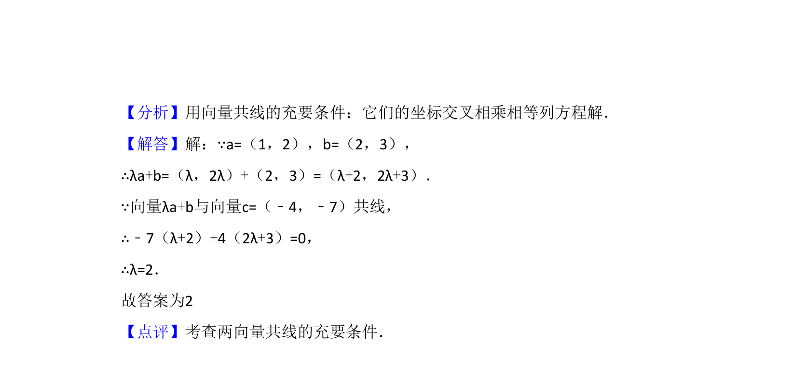

2008-理-13
吉林2008卷全国Ⅱ理题13题型填空难易
考点：向量共线 平面向量坐标运算
题面
摘要
本题通过向量共线条件求参数值，考查向量平行的坐标表示及运算。
关联考点
答案与解析

📄 原 PDF 第 8 页：素材/真题/吉林/2008-2024·（吉林）数学高考真题/2008年高考数学试卷（理）（全国卷Ⅱ）（解析卷）.pdf
题干文本
13．（5分）设向量 ，若向量 与向量 共
线，则λ= 2 ．
解析文本
【考点】96：平行向量（共线）．菁优网版权所有